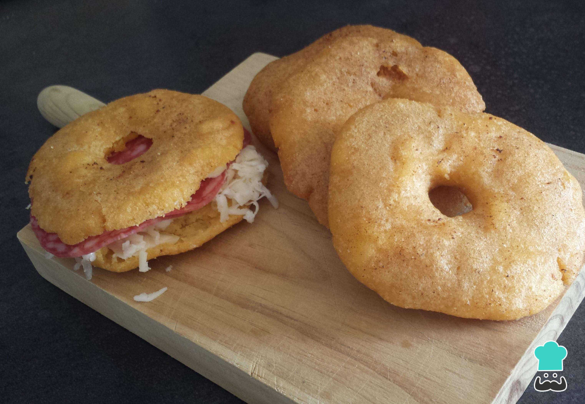

Arepita Frita

Arepa Frita poelbuche facilita!
Sencillita manera de saborear un verdadero gusto Venezolano.
Ingredientes
- Harina Pan or any tamale corn flour.
- An additional cup of water for each cup of corn flour.
- Pinch of salt.
- Spoon of salted butter
- Oil of your choice
- Whatever filling you prefer, can be ham, cheese, egg or even plain is delicious!
Steps
- Mix the flour inside a bowl with water. Remember to add an additional measurement of water for how much flour you will mix. (1 cup flour, 2 cups water)
- While mixing, add salt and soft butter.
- Continue mixing until the flour has absorbed all the water into a nice clay-like consistence
- Scoop a bit out and roll into a ball, then flatten with the palm of your hands until you have a nice flat round wheel
- Poke a hole right in the center of the wheel and dip into the frying oil. The hole helps it cook thoroughly.
- When the arepa is crispy and golden, let it soak into a paper tissue to remove any excess oil.
- When it's not scorching hot anymore, slice it open in the middle and fill with your filling of choice.